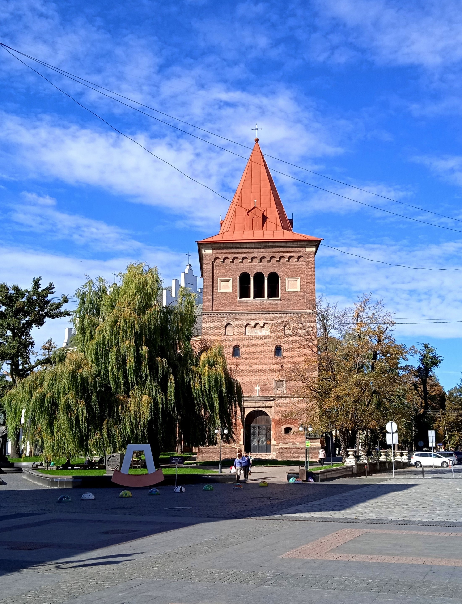
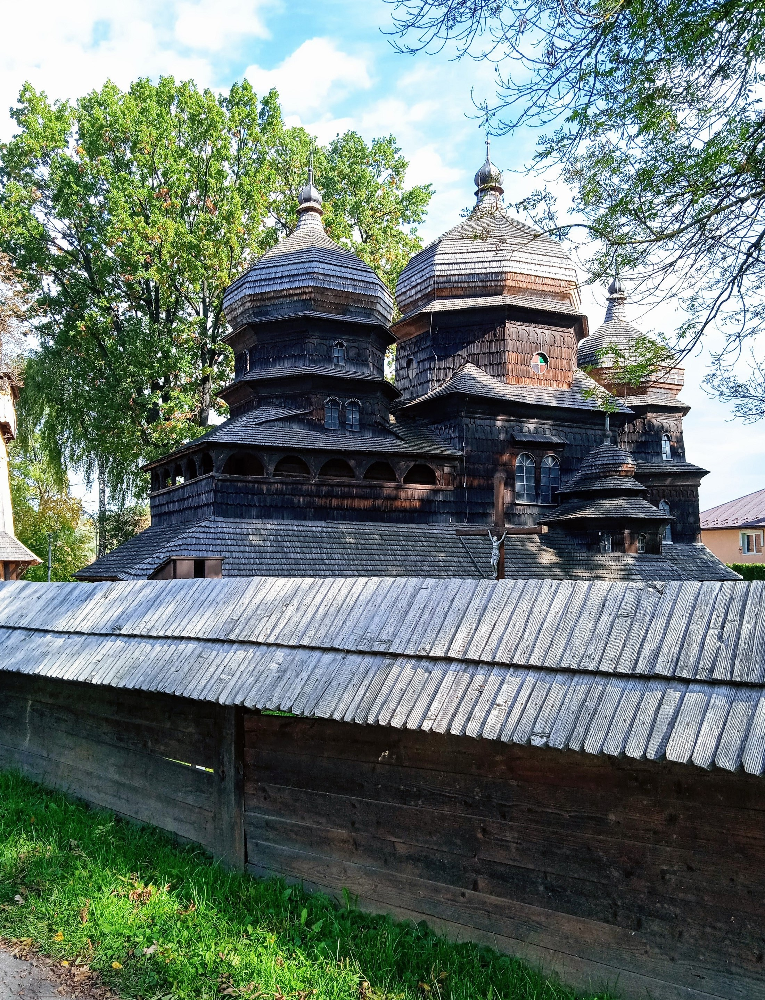
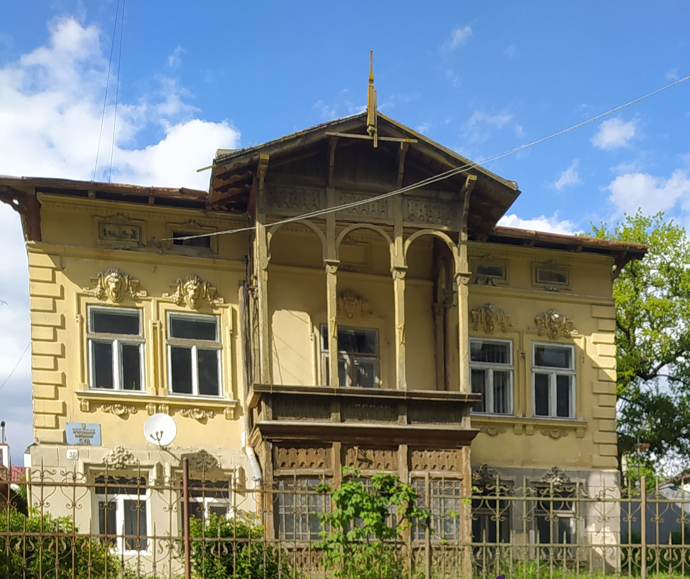

колонка 1
колонка 2
колонка 3
колонка 4
Модуль FLEX
Це цілий модуль, що містить у собі набір властивостей та їх значень як для батька - FLEX-контейнера. так і для дочірніх FLEX-елементів.
Посилання

Костел Святого Апостола Вартоломея (Внебовзяття Пресвятої Діви Марії) — римсько-католицький храм у місті Дрогобичі Львівської області; давній духовний осередок, взірець архітектури готики та бароко (інтер'єрні розписи) кінця XIV—XVI століть, історико-архітектурна пам'ятка національного значення. Входить до переліку 15 містичних та таємничих храмів України.
Button

Церква Святого Юра в Дрогобичі — пам'ятка галицької дерев'яної архітектури кінця XV — початку XVI століть, одна з найкраще збережених і належить до числа найкращих пам'яток давньої української сакральної архітектури. Збудована в XV столітті. Частина об'єкта Світової спадщини ЮНЕСКО.
Button
Дрого́бицька міська́ ратуша — адміністративна будівля, у якій розташована Дрогобицька міська рада. Перша (стара) ратуша була дерев'яною, друга (нова) — з цегли, на три поверхи (висота близько 45 метрів).
Button
Двоповерхову віллу з дерев’яною верандою і балконом по вулиці Лесі Українки, 32 займає Дрогобицький районний суд. Будівля поч. XX ст. Пам'ятка архітектури.

Двоповерхову віллу з дерев’яною верандою і балконом по вулиці Лесі Українки, 32 займає Дрогобицький районний суд. Будівля поч. XX ст. Пам'ятка архітектури.
Костел Святого Апостола Вартоломея (Внебовзяття Пресвятої Діви Марії) — римсько-католицький храм у місті Дрогобичі Львівської області; давній духовний осередок, взірець архітектури готики та бароко (інтер'єрні розписи) кінця XIV—XVI століть, історико-архітектурна пам'ятка національного значення. Входить до переліку 15 містичних та таємничих храмів України.
Костел Святого Апостола Вартоломея (Внебовзяття Пресвятої Діви Марії) — римсько-католицький храм у місті Дрогобичі Львівської області; давній духовний осередок, взірець архітектури готики та бароко (інтер'єрні розписи) кінця XIV—XVI століть, історико-архітектурна пам'ятка національного значення. Входить до переліку 15 містичних та таємничих храмів України.